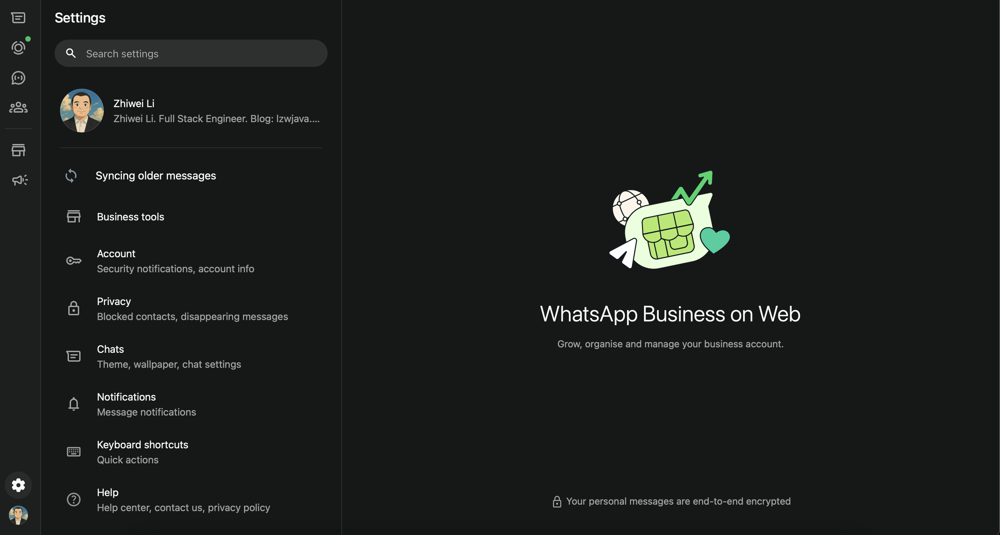

使用 WhatsApp Web | 原创，AI翻译
我今天很高兴使用WhatsApp Web。它提供了全新的体验。我最初是在2019年注册WhatsApp应用程序的，当时我需要与Glassdoor的一个软件客户沟通。那次项目我赚了450欧元。
不过，直到2022年我才再次使用WhatsApp，当时我在新加坡一家银行担任承包商。我注意到同事们使用WhatsApp Business应用程序，于是我也切换了过去。最初注册账户并不容易。我的中国手机号码无法收到短信验证码，但后来我还是解决了这个问题。
之后我使用了一段时间WhatsApp Mac应用程序。不过，由于某种原因，登录二维码无法显示。因此，我转而使用WhatsApp Web。
这是一次令人惊叹的体验。我认为它比微信网页版的体验要好得多。其中一个原因是我WhatsApp上的联系人较少，这使得它运行更快。
我可以想象，一个专门的团队已经为此努力了多年。我感谢他们的付出，并能真切地感受到他们为世界创造有价值的东西的热情。
 Source: screenshot
说实在的，经过几天的使用，我不得不承认在某些情况下它并不理想。WhatsApp Web打开速度慢，我更喜欢用Telegram将iPhone上的图片分享到Mac上。